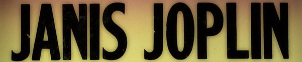
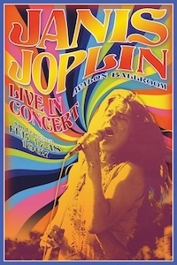
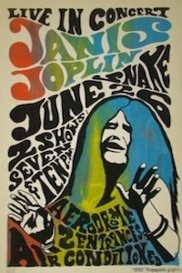
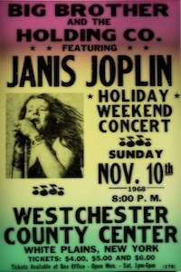
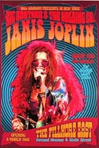

NOTE: Instructions for the Assignment in separate document

From Wikipedia, the free encyclopedia
Janis Lyn Joplin (January 19, 1943 - October 4, 1970), nicknamed "Pearl", was an American rock, soul and blues singer and songwriter, and one of the most successful and widely-known female rock stars of her era. After releasing three albums, she died of a heroin overdose at the age of 27. A fourth album, Pearl, was released in January 1971, just over three months after her death. It reached number one on the Billboard charts.




In 1967, Joplin rose to fame during an apperance at Monterey Pop Festival, where she was the lead singer of the then little-known San Francisco psychedelic rock band Big Brother and the Holding Company. After releasing two albums with the band, she left Big Brother to continue as a solo artist with her own backing groups, firt the Kozmic Blues Band and then the full Tilt Boogie Band. She appeared at the Woodstock festival and the festival Express train tour. Five singles by Joplin reached the Billboard hot 100, including a cover of the Kris Kristofferson song "Me and Bobby McGee", which reached number 1 in March 1971. Her most popular songs include her cover versions of "Prece of My Heart", "Cry Baby", "Down on Me", "Ball and Chain", and "Summertime"; and her original song "Mercedes Benz", her final recording.